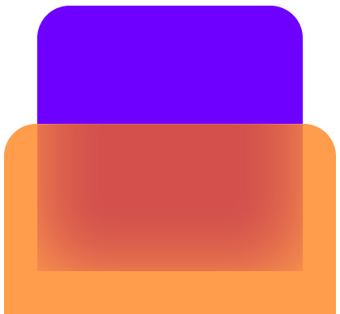

Vertical tabs that breathe
Titles you can actually read. Drag to reorder. Collapse the whole strip to a hairline when you want the page to have it all.

Panes Download0.1 alpha is here
Panes is a calm, fast browser built around the way you actually work: vertical tabs, instant split view, and a stack you can scrub through. No clutter. No ads.
Press Ctrl \ and your tab splits right where you are.
Every part of Panes is designed around one idea: you should see more of the web and less of the browser.
Titles you can actually read. Drag to reorder. Collapse the whole strip to a hairline when you want the page to have it all.
A fast built-in blocker, no extension to install. Flip it off in settings if you ever want to.
Work, home, side project. Each space keeps its own tabs so context never bleeds.
History, bookmarks, downloads and settings are first-class pages with the same polish as the rest of the browser.
Drop a tab on the edge of the page, or hit Ctrl \. Drag the divider to give either side the room it needs. Swap panes or close one with a click.
Drag the divider
Hold Ctrl and scroll to fan through your open tabs along a timeline. Or open Task view for the whole grid at once.
Hover to fan out
Panes 0.1.0-alpha.21 for Windows 10 and 11. It updates itself. macOS and Linux are on the way.
Alpha software, and the installer is not code-signed yet: if Windows SmartScreen steps in, choose More info, then Run anyway.